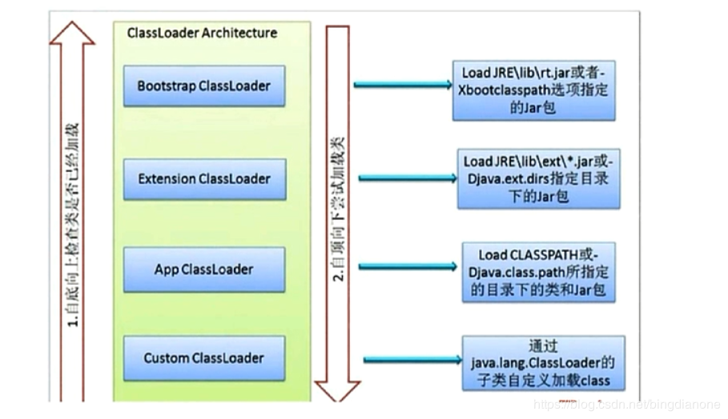
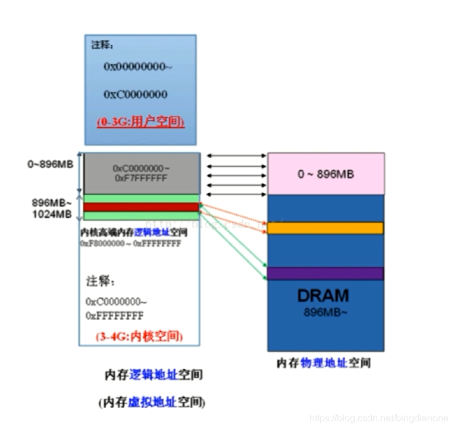
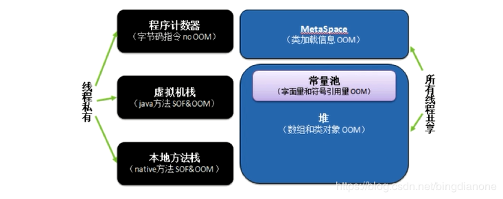
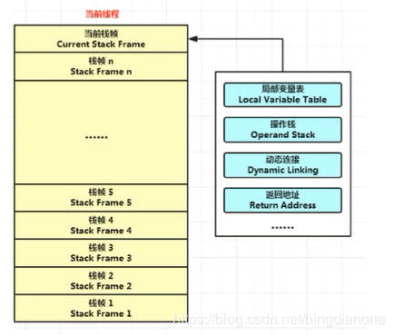
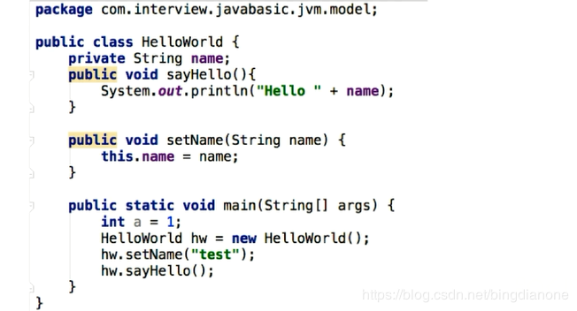

面试问道：谈谈你对java的理解 一般我们要简单的从 平台无关性、GC、语言特性、面向对象、类库、异常处理等来简要回答。
平台无关性如何实现 Compile Once，Run Anywhere如何实现
1 2 3 4 5 6 7 8 9 public class ByteCodeSample public static void main (String[] args) int i=1 ,j=5 ; i++; ++j; System.out.println(i); System.out.println(j); } }
编译时javac test/java/com/kun/ByteCodeSample.java 进行编译生成字节码.class文件
运行时java com/kun/ByteCodeSample 进行运行字节码文件
反汇编javap -c com/kun/ByteCodeSample 进行反汇编；这里反汇编编译的时.class字节码文件
反汇编查看字节码内容
1 2 3 4 5 6 7 8 9 10 11 12 13 14 15 16 17 18 19 20 21 22 23 24 Compiled from "ByteCodeSample.java" public class com .kun .ByteCodeSample public com.kun.ByteCodeSample(); Code: 0 : aload_0 1: invokespecial #1 //调用父类构造方法 super Method java/lang/Object."<init>":()V 4 : return public static void main (java.lang.String[]) Code: 0 : iconst_1 1 : istore_1 2 : iconst_5 3 : istore_2 4 : iinc 1 , 1 7 : iinc 2 , 1 10: getstatic #2 // 获取PrintStream静态域 Field java/lang/System.out:Ljava/io/PrintStream; 13 : iload_1 14: invokevirtual #3 //打印出栈顶的值 Method java/io/PrintStream.println:(I)V 17: getstatic #2 // 获取PrintStream静态域 Field java/lang/System.out:Ljava/io/PrintStream; 20 : iload_2 21: invokevirtual #3 //打印出栈顶的值 Method java/io/PrintStream.println:(I)V 24 : return }
为什么JVM不直接将源码解析成机器码去执行 准备工作：每次执行都需要各种检查（浪费时间，降低效率）
JVM如何加载.class文件 主要是通过 Class Loader依据特定格式，加载class文件到内存，之后通过Execution Engine对命令进行解析，最后提交给操作系统去执行。
Java虚拟机
Class Loader：依据特定格式，加载class文件到内存
Execution Engine：对命令进行解析
Native Interface：融合不同开发语言的原生库为Java所用 （比如class.forName的实现就接用了native方法）
Runtime Data Area：后续有详细介绍
如果要看native类，请参考openjdk 中的jdk8里的share里的java.lang
谈谈反射 JAVA反射机制是运行状态中，对于任意一个类，都能够知道这个类的所有属性和方法；对于任意对象，都能够调用它的任意方法和属性；这种动态获取信息以及动态调用对象方法的功能称为java语言的反射机制。
列举或写一个反射的例子 实体类
1 2 3 4 5 6 7 8 9 10 11 package com.kun;public class People private String name; public void say (String sentence) System.out.println(sentence + " " + name); } private String throwHello (String tag) return "Hello " + tag; } }
反射拿到调用方法返回结果
1 2 3 4 5 6 7 8 9 10 11 12 13 14 15 16 17 18 19 20 21 22 23 24 25 26 27 28 29 30 31 32 33 34 35 package com.kun;import java.lang.reflect.Field;import java.lang.reflect.InvocationTargetException;import java.lang.reflect.Method;public class ReflectSample public static void main (String[] args) throws ClassNotFoundException, IllegalAccessException, InstantiationException, NoSuchMethodException, InvocationTargetException, NoSuchFieldException Class aClass = Class.forName("com.kun.People" ); People people = (People) aClass.newInstance(); System.out.println("类名: " + aClass.getName()); Method throwHello = aClass.getDeclaredMethod("throwHello" , String.class ) ; throwHello.setAccessible(true ); Object jek = throwHello.invoke(people, "jek" ); System.out.println("throwHello返回值 " + jek); Method say = aClass.getMethod("say" , String.class ) ; say.invoke(people, "welcome" ); Field name = aClass.getDeclaredField("name" ); name.setAccessible(true ); name.set(people,"Alice" ); say.invoke(people, "welcome" ); } } 类名: com.kun.People throwHello返回值 Hello jek welcome null welcome Alice
类从编译到执行的过程
编译器将People.java源文件编译为People.class字节码文件
ClassLoader将字节码转换为JVM中的Class<People>对象
JVM利用Class<People>对象实例化为People对象谈谈ClassLoader ClassLoader 在Java中有着非常重要的作用，它主要工作在Class装载的加载阶段，其主要作用从系统外部获得Class二进制数据流。它是Java的核心组件，所有的Class都是由ClassLoader进行加载的，ClassLoader负责通过将Class文件里的二进制数据流装载进系统，然后交给Java虚拟机进行连接、初始化等操作。
它是一个抽象类
1 public abstract class ClassLoader
其中最重要的方法：加载类
1 2 3 public Class<?> loadClass(String name) throws ClassNotFoundException { return loadClass(name, false ); }
ClassLoader的种类
BootStrapClassLoader：C++编写，加载核心类java.*。(parent是null)
ExtClassLoader：Java编写，加载扩展库javax.*
AppClassLoader：Java编写，加载程序所在目录
自定义ClassLoader ：Java编写，定制化加载 。 （parent是AppClassLoader）自定义ClassLoader的实现 关键函数
findClass 寻找Class文件
1 2 3 protected Class<?> findClass(String name) throws ClassNotFoundException { throw new ClassNotFoundException(name); }
defineClass
1 2 3 4 5 protected final Class<?> defineClass(byte [] b, int off, int len) throws ClassFormatError { return defineClass(null , b, off, len, null ); }
先在任意地方创建一个类，运行生成class字节码文件
1 2 3 4 5 public class Kun static { System.out.println("Hello Kun" ); } }
编写自定义ClassLoader类
1 2 3 4 5 6 7 8 9 10 11 12 13 14 15 16 17 18 19 20 21 22 23 24 25 26 27 28 29 30 31 32 33 34 35 36 37 38 39 40 41 42 43 44 45 46 47 48 package com.kun;import java.io.ByteArrayOutputStream;import java.io.File;import java.io.FileInputStream;import java.io.InputStream;public class MyClassLoader extends ClassLoader private String path; private String classLoaderName; public MyClassLoader (String path,String classLoaderName) this .path=path; this .classLoaderName=classLoaderName; } @Override public Class findClass (String name) byte [] b = loadClassData(name); return defineClass(name,b,0 ,b.length); } private byte [] loadClassData(String name) { name=path+name+".class" ; InputStream in = null ; ByteArrayOutputStream out = null ; try { in = new FileInputStream(new File(name)); out = new ByteArrayOutputStream(); int i = 0 ; while ((i=in.read())!=-1 ){ out.write(i); } }catch (Exception e){ e.printStackTrace(); }finally { try { out.close(); in.close(); }catch (Exception e){ e.printStackTrace(); } } return out.toByteArray(); } }
1 2 3 4 5 6 7 8 9 10 11 12 13 14 15 package com.kun;public class ClassLoaderChecker public static void main (String[] args) throws ClassNotFoundException, IllegalAccessException, InstantiationException MyClassLoader myClassLoader = new MyClassLoader("\\Users\\K\\Desktop\\" ,"test" ); Class kun = myClassLoader.loadClass("Kun" ); System.out.println(kun.getClassLoader()); kun.newInstance(); } } com.kun.MyClassLoader@14 ae5a5 Hello Kun
谈谈类加载器（ClassLoader）的双亲委派机制 
核心源码
1 2 3 4 5 6 7 8 9 10 11 12 13 14 15 16 17 18 19 20 21 22 23 24 25 26 27 28 29 30 31 32 33 34 35 36 protected Class<?> loadClass(String name, boolean resolve) throws ClassNotFoundException { synchronized (getClassLoadingLock(name)) { Class<?> c = findLoadedClass(name); if (c == null ) { long t0 = System.nanoTime(); try { if (parent != null ) { c = parent.loadClass(name, false ); } else { c = findBootstrapClassOrNull(name); } } catch (ClassNotFoundException e) { } if (c == null ) { long t1 = System.nanoTime(); c = findClass(name); sun.misc.PerfCounter.getParentDelegationTime().addTime(t1 - t0); sun.misc.PerfCounter.getFindClassTime().addElapsedTimeFrom(t1); sun.misc.PerfCounter.getFindClasses().increment(); } } if (resolve) { resolveClass(c); } return c; } }
为什么使用双亲委派机制去加载类
避免多份同样字节码的加载类的加载方式
隐式加载：new
显示加载：loadClass、forName等
loadClass和forName的区别 类的装载过程
加载
通过ClassLoader加载class文件字节码，生成class对象
链接
校验：检查加载的class的正确性和安全性
准备：为类变量分配存储空间并设置类变量初始值
解析：JVM将常量池内的符号引用转换为直接引用
初始化
区别
Class.forName得到的class是已经初始化完成的（初始化MySQL数据库连接）
Classloder.loadClass得到的class是还没有链接的（spring ioc运用到延迟加载）你了解Java的内存模型吗
内存简介
32位处理器：2^32的可寻址范围
64位处理器：2^64的可寻址范围
地址空间的划分

JVM内存模型 - JDK8 
线程私有：程序计数器、虚拟机栈、本地方法栈 线程共享：MetaSpace、Java堆
程序计数器（Program Counter Register）
当前线程所执行的字节码行号指示器（逻辑）
改变计数器的值来选取下一条需要执行的字节码指令
和线程是一对一的关系即线程私有
对Java方法计数，如果是Native方法则计数器值位Undefined
不会发生内存泄漏
Java虚拟机栈(Stack)
局部变量表和操作数栈
局部变量表：包含方法执行过程中的所有变量
操作数栈：入栈、出栈、复制、交换、生产消费变量
源代码
1 2 3 4 5 6 7 8 9 package com.kun;public class ByteCodeSample public static int add (int a,int b) int c=0 ; c=a+b; return c; } }
javac反编译后
1 2 3 4 5 6 7 8 9 10 11 12 13 14 15 16 17 18 19 20 21 22 23 24 25 26 27 28 29 30 31 32 33 34 35 36 37 38 39 40 41 42 43 44 45 46 47 48 49 50 51 52 53 54 55 56 57 58 59 60 61 62 C:\Users\K\Documents\IDEA\java_train\src\test\java>javap -verbose com\kun\ByteCodeSample.class //文件信息 Classfile /C:/Users/K/Documents/IDEA/java_train/src/test/java/com/kun/ByteCodeSample.class Last modified 2019 -11 -5 ; size 278 bytes MD5 checksum 27f a20ed9289f599a73ba2cdf75b8036 Compiled from "ByteCodeSample.java" public class com .kun .ByteCodeSample minor version: 0 major version: 52 flags: ACC_PUBLIC, ACC_SUPER Constant pool: #1 = Methodref #3.#12 // java/lang/Object."<init>":()V #2 = Class #13 // com/kun/ByteCodeSample #3 = Class #14 // java/lang/Object #4 = Utf8 <init> #5 = Utf8 ()V #6 = Utf8 Code #7 = Utf8 LineNumberTable #8 = Utf8 add #9 = Utf8 (II)I #10 = Utf8 SourceFile #11 = Utf8 ByteCodeSample.java #12 = NameAndType #4:#5 // "<init>":()V #13 = Utf8 com/kun/ByteCodeSample #14 = Utf8 java/lang/Object { public com.kun.ByteCodeSample(); descriptor: ()V flags: ACC_PUBLIC Code: stack=1 , locals=1 , args_size=1 0 : aload_0 1: invokespecial #1 // Method java/lang/Object."<init>":()V 4 : return LineNumberTable: line 3 : 0 public static int add (int , int ) descriptor: (II)I flags: ACC_PUBLIC, ACC_STATIC Code: stack=2 , locals=3 , args_size=2 0 : iconst_0 1 : istore_2 2 : iload_0 3 : iload_1 4 : iadd 5 : istore_2 6 : iload_2 7 : ireturn LineNumberTable: line 5 : 0 line 6 : 2 line 7 : 6 } SourceFile: "ByteCodeSample.java"
执行add（1，2）
递归为什么会引发java.lang.StackOverflowError异常 1 2 3 4 5 6 7 8 9 10 11 12 13 14 public class Fibonacci public static int fibonacci (int n) if (n == 0 ) {return 0 ;} if (n == 1 ) {return 1 ;} return fibonacci(n - 1 ) + fibonacci(n - 2 ); } public static void main (String[] args) System.out.println(fibonacci(1000000 )); } }
上诉代码就会报错；不停的递归调用一个方法，会使单个线程的栈帧急速增多，操作数栈会不断压栈进入数据，导致StackOverflow。
虚拟机栈过多会引发java.lang.OutOfMenoryError异常
本地方法栈
与虚拟机栈相似，主要作用于标注了native的方法MetaSpace在1.8及之前是属于永久代的，都是用来存储class的相关信息，包括class的相关对象的method、 field 等；元空间和永久代都是方法区的实现，只不过实现有所不同，方法区只是jvm的一种规范；在1.7及之后方法区的字符串常量池已经被移动到java堆中，并且在1.8及之后使用元空间替代了永久代。
元空间使用本地内存，而永久代使用的是jvm的内存
1.8之后java.lang.OutOfMemoryError:PermGen space 错误将不复存在
MetaSpace相比PermGen的优势
字符串常量池存在永久代中，容易出现性能问题和内存溢出
类和方法的信息大小难以确定，给永久代的大小指定带来困难
永久代会为GC带来不必要的复杂性
方便HotSpot与其他JVM如Jrockit的集成
Java堆
常考面试题 JVM三大性能调优参数-Xms -Xmx -Xss的含义
-Xss：规定了每个线程虚拟机栈（堆栈）的大小
-Xms：堆的初始值
-Xmx：堆能达到的最大值
通常情况下-Xms -Xmx会设置成一样的，因为当k不够用自动扩容时会发生内存抖动，影响程序的运行。
Java内存模型中堆和栈的区别 先回答 内存分配策略
静态存储：编译时确定每个数据目标在运行时的存储空间需求
栈式存储：数据区需求在编译时未知，运行时模块入口前确定
堆式存储：编译时或运行时模块入口都无法确定，动态分配
Java内存模型中堆和栈的区别
联系 ：引用对象、数组时，栈里定义变量保存堆中目标的首地址区别
管理方式：栈自动释放，堆需要GC
空间大小：栈比堆小
碎片相关：栈产生的碎片远小于堆
分配方式：栈支持静态分配和动态分配，而堆仅支持动态分配
效率：栈的效率比堆高元空间、堆、线程独占部分间的联系-内存角度 
元空间
Class：HelloWorld - Method：sayHello\setName\main - Field :name
Class：System
Java堆
Object：String（“test”）
Object：HelloWorld
线程独占
Parameter reference：“test” to String object
Variable reference：“hw” to HelloWorld object
Local Variables：a with 1，lineNo不同JDK版本之间的intern()方法的区别-JDK6 VS JDK+
1 2 String s = new String("a" ) s.intern();
JDK6 :当调用intern方法时,如果字符串常量池先前已创建出该字符串对象,则返回池中的该字符串的引用。否则,将此字符串对象添加到字符串常量池中,并且返回该字符串对象的引用。
JDK6+:当调用intern方法时,如果字符串常量池先前已创建出该字符串对象,则返回池中的该字符串的引用。否则,如果该字符串对象已经存在于Java堆中,则将堆中对此对象的引用添加到字符串常量池中,并且返回该引用;如果堆中不存在,则在池中创建该字符串并返回其引用。
引爆jdk6的常量池的代码 java.lang.OutOfMemoryError:PermGen space
1 2 3 4 5 6 7 8 9 10 11 12 13 14 15 16 17 18 19 20 21 22 23 24 import java.util.Random;public class PermGenErrTest public static void main (String[] args) for (int i=0 ; i <= 1000 ; i++){ getRandomString(1000000 ).intern(); } System.out.println("Mission Complete!" ); } private static String getRandomString (int length) String str="abcdefghijklmnopqrstuvwxyzABCDEFGHIJKLMNOPQRSTUVWXYZ0123456789" ; Random random = new Random(); StringBuffer sb = new StringBuffer(); for ( int i = 0 ; i < length; i++){ int number = random.nextInt(62 ); sb.append(str.charAt(number)); } return sb.toString(); } }
在VM options运行参数里填写永久代大小 -XX:MaxPermSize=6M -XX:PermSize=6M
以下代码1.6的执行结果为false false； 1.6+为false true
1 2 3 4 5 6 7 8 9 10 11 12 13 14 15 package com.interview.javabasic.jvm.model;public class InternDifference public static void main (String[] args) String s = new String("a" ); s.intern(); String s2 = "a" ; System.out.println(s == s2); String s3 = new String("a" ) + new String("a" ); s3.intern(); String s4 = "aa" ; System.out.println(s3 == s4); } }
JDK6解释图 JDK6+解释图